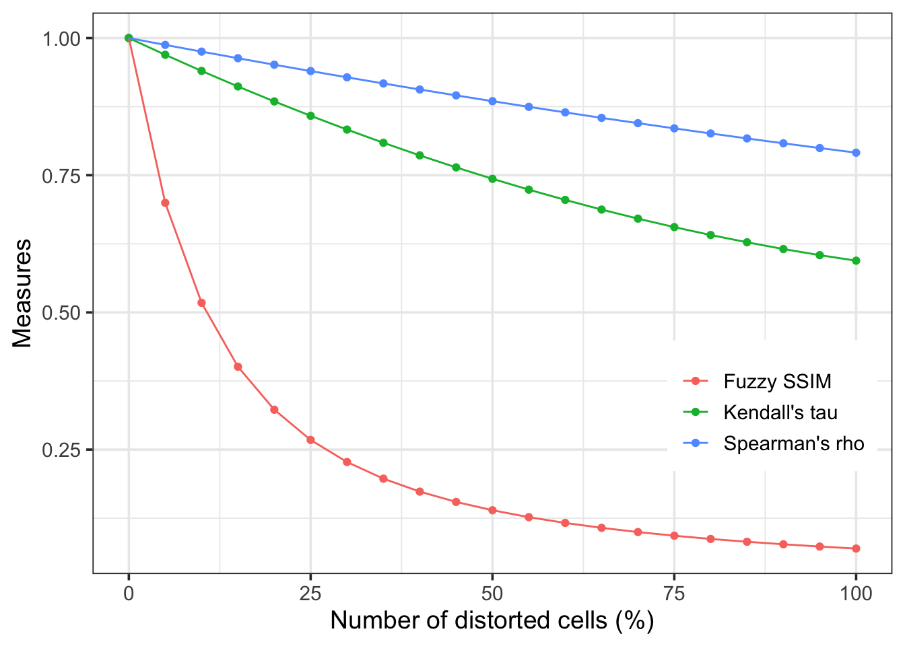
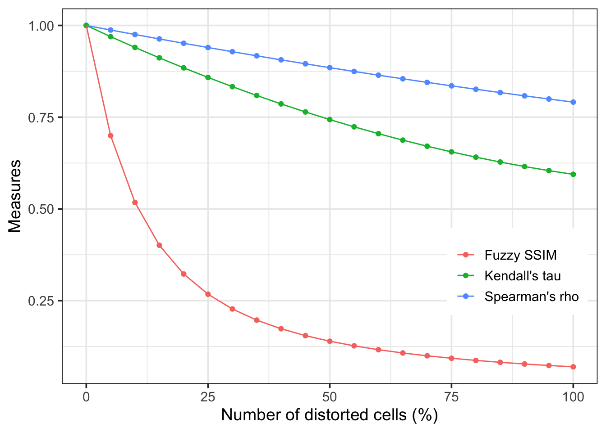

Usage example

Figure 2: The map of (a) Fuzzy SSIM between solar radiation and temperature data, which is the product of (b) s1 and (c) s2. Solar radiation and temperature data are obtained from the WorldClim dataset.
The objective of this study was to develop an approach for assessing spatial association by applying fuzzy sets (Mendel 2017) to the calculation of the SSIM index. The type-1 fuzzy sets were used to transform the variables to the scale of 0-1. The uncertainty of the ecological data was represented with the interval type-2 fuzzy sets. These approaches would facilitate the evaluation of the spatial association between the ecological variables.
Map comparison is often needed for evaluating spatial models in ecological studies. The SSIM index (Wang et al. 2004) originally developed for image quality assessment have been suggested as a diagnostic tool for spatial modeling and analysis (Robertson et al. 2014; Jones et al. 2016). It has advantages to evaluate the association compared to single measures because it can measure the agreement between variables in terms of their central tendencies, variabilities, and the correlation.
However, the SSIM index requires the variables being compared would have the same sign and the same range of values. It is not unusual for ecological variables having different signs and considerable difference in the ranges, e.g. temperature and solar radiation. Thus, some transformation of the data is needed to apply the SSIM index for association assessment.
SSIM index is defined to compare their means, standard deviations, and capture the correlation coefficient between variables.
\[SSIM(x, y)=l(x, y) \cdot c(x, y) \cdot s(x,y)\]
\[l(x, y)=\frac{2 \mu_{x} \mu_{y}+C_{1}}{\mu_{x}^{2}+\mu_{y}^{2}+C_{1}}\]
\[c(x, y)=\frac{2 \sigma_{x} \sigma_{y}+C_{2}}{\sigma_{x}^{2}+\sigma_{y}^{2}+C_{2}}\]
\[s(x, y)=\frac{\sigma_{x y}+C_{3}}{\sigma_{x} \sigma_{y}+C_{3}}\]
The SSIM index ranges from -1 to 1. It gets maximum of 1 if and only if \(x=y\).
\[\mu_{A}(x)=\left\{\begin{array}{ll}{0} & {\text { if } x<x_{\min }} \\ {1} & {\text { if } x>x_{\max }} \\ {\frac{x-x_{\min }}{x_{\max }-x_{\min }}} & {\text { otherwise }}\end{array}\right.\]
Figure 1: The type-1 membership function for temperature
Figure 2: The map of (a) Fuzzy SSIM between solar radiation and temperature data, which is the product of (b) s1 and (c) s2. Solar radiation and temperature data are obtained from the WorldClim dataset.
 

Figure 3: Similarity measures of Fuzzy SSIM, Kendall’s tau, and Spearman’s rho between the reference and distortion adding Gaussian noise
The SSIM index between fuzzified values would be useful to evaluate spatial relationships between two ecological variables. The fuzzy sets could eliminate the scale inequality while maintaining the relative association, and make it feasible to determine the SSIM index between two maps of ecological variables.
Jones, Esther L., Luke Rendell, Enrico Pirotta, and Jed A. Long. 2016. “Novel Application of a Quantitative Spatial Comparison Tool to Species Distribution Data.” Ecological Indicators 70 (November). Elsevier BV: 67–76. https://doi.org/10.1016/j.ecolind.2016.05.051.
Mendel, Jerry M. 2017. Uncertain Rule-Based Fuzzy Systems. 2nd ed. Springer International Publishing. https://doi.org/10.1007/978-3-319-51370-6.
Robertson, Colin, Jed A. Long, Farouk S. Nathoo, Trisalyn A. Nelson, and Cameron C. F. Plouffe. 2014. “Assessing Quality of Spatial Models Using the Structural Similarity Index and Posterior Predictive Checks.” Geographical Analysis 46 (1). Wiley-Blackwell: 53–74. https://doi.org/10.1111/gean.12028.
Wang, Z., A.C. Bovik, H.R. Sheikh, and E.P. Simoncelli. 2004. “Image Quality Assessment: From Error Visibility to Structural Similarity.” IEEE Transactions on Image Processing 13 (4). Institute of Electrical; Electronics Engineers (IEEE): 600–612. https://doi.org/10.1109/tip.2003.819861.